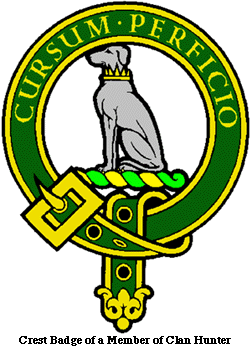
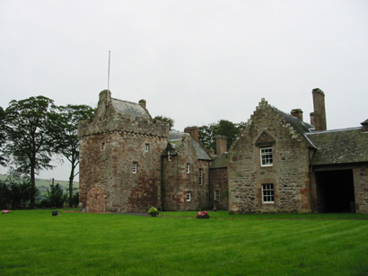
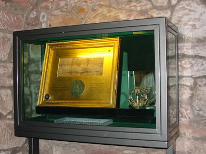
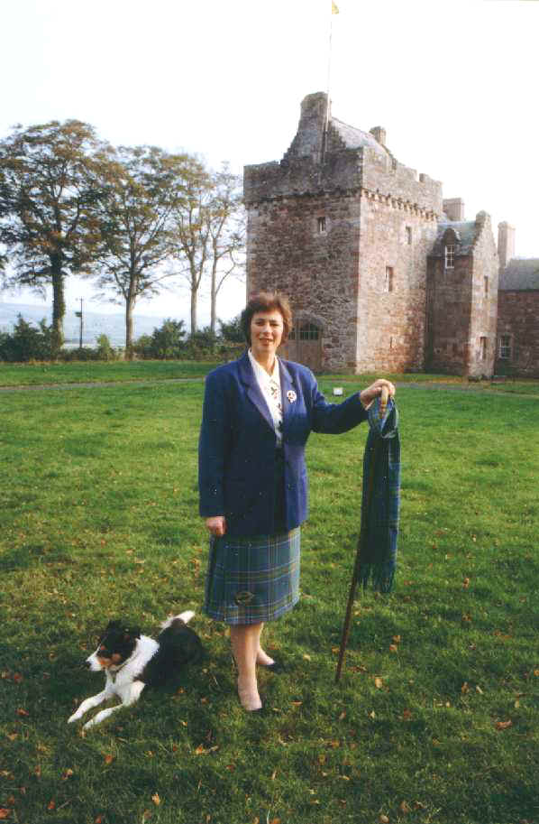
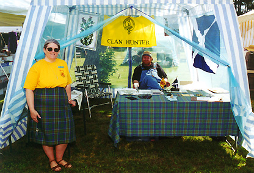

Clan Hunter

As is typical with anyone of Scottish descent, I could likely claim any number of Clans as my own. I have chosen Clan Hunter for the simple and pragmatic reason that my nearest antecedent from Scotland was Jane Hunter. I am still only dabbling in searching that family line--I'll have more time when I retire, right?? What I know thus far is that she and her parents, James Hunter and Margaret Allen Hunter, left Greenoch and arrived in New Brunswick in 1846, settling at Perry Point (Kings County). Later on in that same year she married John Tenpenny Murphy in St. John. I can only surmise what brought Jane and her parents to the New World--there was famine in Scotland in those years and there had been several epidemics of typhus and cholera. I have also heard they, being weavers, did not like those new mechanized looms--Luddites! Meanwhile, if you are a Hunter (or a Murphy) and some of your ancestors settled in New Brunswick, perhaps we can compare notes.
I will soon have my Hunter genealogy/family history posted here.
 |
At Hunterston Castle in West Kilbride, Ayrshire, Scotland, there is an ancient charter signed by seal of King Robert II (the Bruce's grandson--first in the line of the House of Stewart), granting the lands to William Hunter, the 10th Laird, on May 2, 1374. The earliest record of Hunters in Scotland dates back to 1116, where reference is made to William Hunter (the 1st Laird) being a witness to the Inquisition of King David I. |
King David I would have invited Normans to join him in Scotland, friends to aid him in ruling an unruly kingdom, as David grew up in the Norman courts. The name Hunter does derive from the occupation of our original kinsmen, but it implies much more. As you will note by the Clan Crest, there is a coronet around the dog's neck, signifying a royal connection--apparently our ancestor was excellent at his craft, having been appointed the Chief Hunter in Scotland by King David.
| The charter and a replica of the Hunterston Brooch displayed at Hunterston Castle. The original brooch was found in 1830 during excavations. It is a stunning example of 8th century craftsmanship, combining Celtic and Anglo-Saxon designs. It is 5 inches in diameter, made of silver, partially gilded, inset with gold, and studded with amber. The original is on display in the National Museum of Antiquities of Scotland, in Edinburgh. |  |
The tartan background on this site is the current Hunter tartan.
 |
Madame Pauline Hunter of Hunterston, 30th Laird. |
More pictures of Hunterston Castle here

Here I am, representing Clan Hunter at the Western Massachusetts Highland Games and Celtic Festival, June 24, 2000. The gentleman sitting in the tent is Steve May, a good friend of mine whose company, InKeeper, hosts this site and the WMass Games website. He traveled all the way from West Virginia, with his new bride, Deb, to share the day.
This was my first time out representing the Clan at a games, and I had a great time doing so. The Association was extremely helpful in calming my nerves and getting tent supplies to me in a timely fashion. I plan on doing it again next year!
Clan Hunter Links
The official website for Clan Hunter Association, USA
Tom Hunter, who is the President of Clan Hunter Association Canada, has a comprehensive site.
There is Clan Hunter merchandise and information on ordering.
The Gathering of the Clans has Clan Hunter pages, including a discussion forum.
Heather's Hunter page, which includes links to other Hunter sites.
Hunter genealogy message board.
Electric Scotland has a webboard system for hundreds of clans, including Clan Hunter.
All suggestions for other Hunter links welcome:
I have created a OneList community for Clan Hunter. Please join the email list set up exclusively for us!

Click to subscribe to HunterClan
The above link will bring you to the eGroups site. If you want to jump right in and subscribe, then:
Thanks!